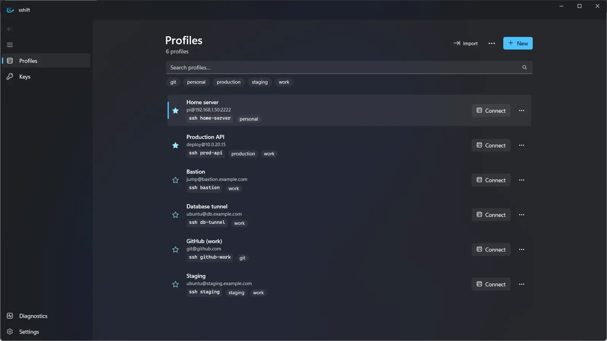
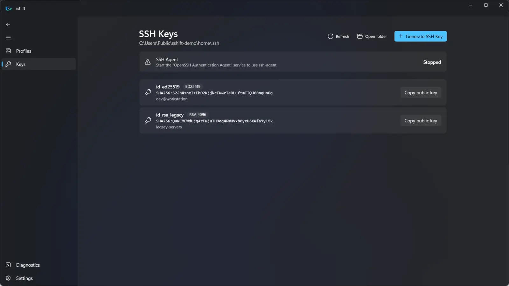
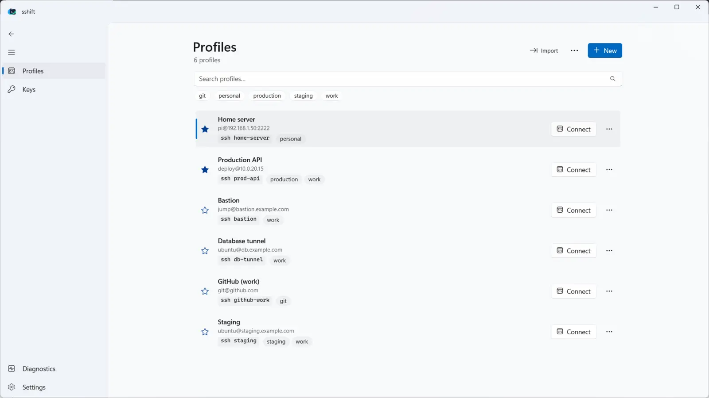

SSH profiles for Windows,
configured visually
sshift is a native Windows app for your SSH connections. Create a profile once and use it everywhere: in sshift, PowerShell, Windows Terminal, Git and VS Code.

USD 2.99 · one-time purchase · 7-day free trial · Windows 10 & 11 (x64, ARM64)
PS> ssh prod-api # the profile you created in sshift deploy@prod-api:~$ _

Everything you edit in ~/.ssh/config, without editing it
A focused tool: sshift doesn't replace OpenSSH or your terminal. It gives the configuration you already rely on a clean, native interface.
Works in every terminal
Profiles become standard OpenSSH Host entries: ssh alias works in PowerShell, CMD, Windows Terminal, Git, VS Code, scp and sftp.
One-click connect
Open any profile in Windows Terminal, PowerShell or Command Prompt. Copy the ssh command with Ctrl+C.
Keys and identities
Discover keys in your .ssh folder, see fingerprints, copy public keys and generate ED25519 or RSA keys.
Jump hosts and tunnels
ProxyJump with loop detection, local, remote and SOCKS port forwarding, keep-alives and more.
Validated by OpenSSH
Every change is checked with ssh -G before it is saved. A broken config never replaces a working one.
Import what you have
Bring simple hosts from your existing ~/.ssh/config. Advanced blocks are left untouched.
Organized
Favorites, tags and instant search (tag:production) across names, aliases, hosts and users.
Native Windows 11 design
Fluent design with Mica, light and dark themes, keyboard shortcuts and screen reader labels.
Private by design
No accounts, no cloud, no telemetry. Passwords, passphrases and private keys are never stored.
How it works
Your existing configuration is never rewritten. sshift keeps its profiles in their own file and adds a single Include line, backing up your config first.
sshiftYou create and edit profiles in the app.
~/.ssh/sshift/configGenerated as plain OpenSSH config and validated with ssh -G.
~/.ssh/configOne Include line at the top; your own entries stay as they are.
ssh.exeThe OpenSSH client built into Windows connects, exactly as from the command line.
Screenshots
Dark and light themes follow your Windows settings.


FAQ
What do I need to use sshift?
Windows 10 version 1809 or later, or Windows 11, with the Windows OpenSSH Client. It is installed by default on current Windows versions; otherwise add it in Settings › System › Optional features.
Will sshift change my existing ~/.ssh/config?
Only by adding one Include ~/.ssh/sshift/config line at the top, after making a backup. Your own Host blocks are never modified or removed.
What happens if I uninstall sshift?
Your profiles stay in ~/.ssh/sshift/config and keep working with ssh alias. Your keys and your own configuration are never deleted.
Does sshift store my passwords?
No. Password logins work because ssh asks for the password in the terminal. sshift never stores passwords, passphrases or private key contents.
Does it send any data?
No. There is no telemetry, analytics or account. See the privacy policy.
Is there a trial?
Yes, 7 days with every feature. After that, sshift is a one-time purchase of USD 2.99 (local prices vary).